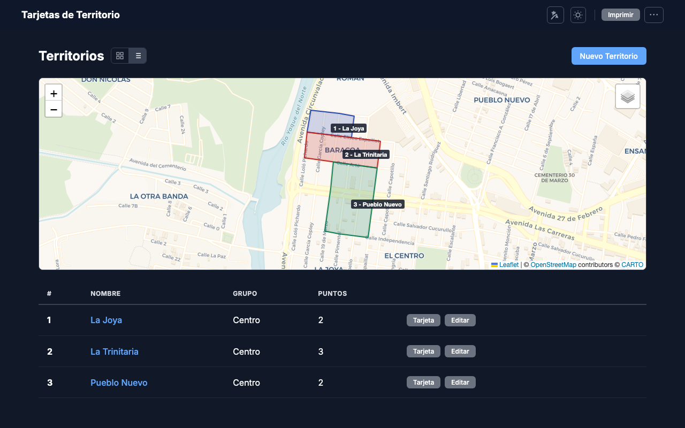
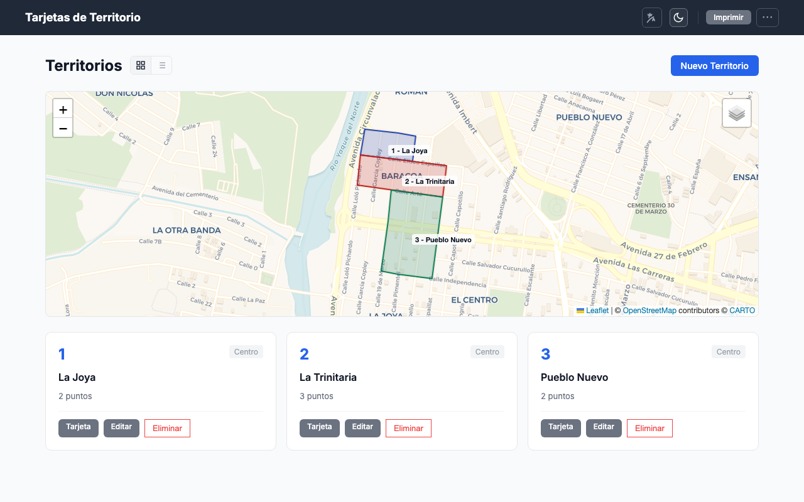
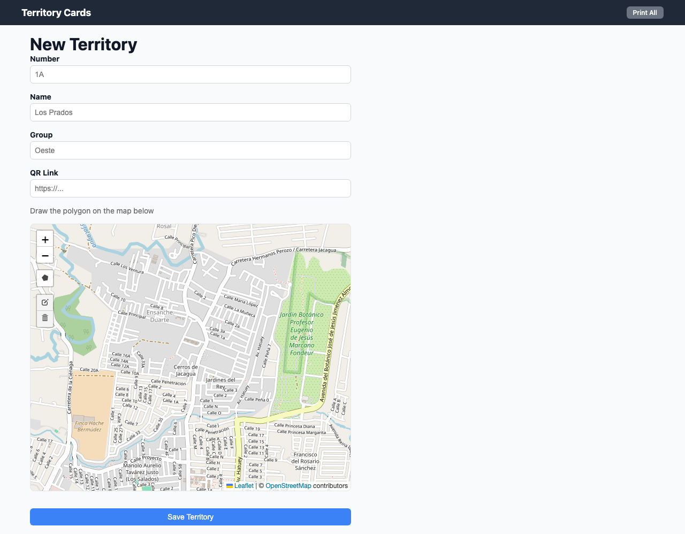
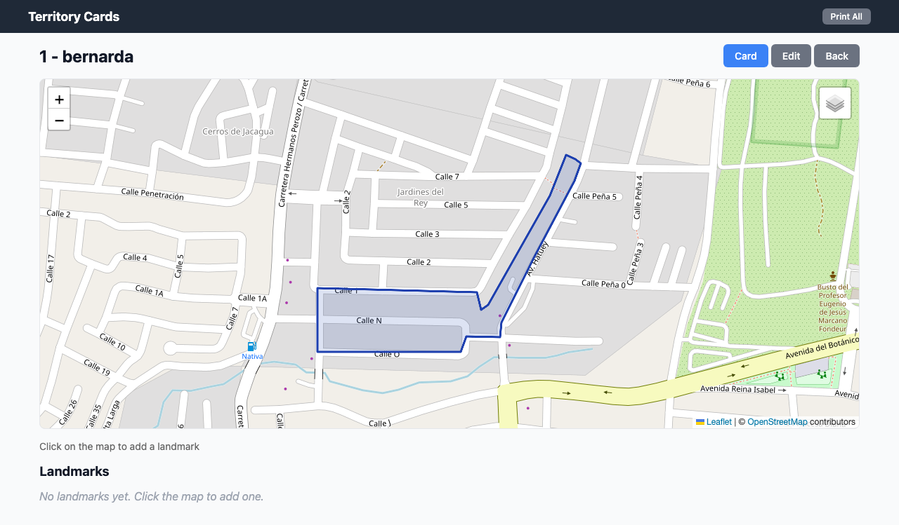
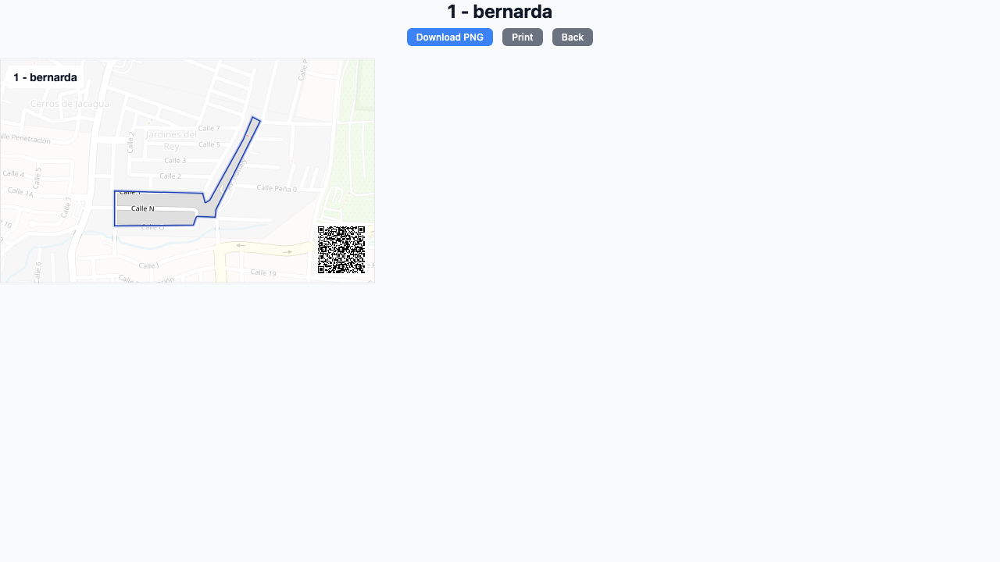
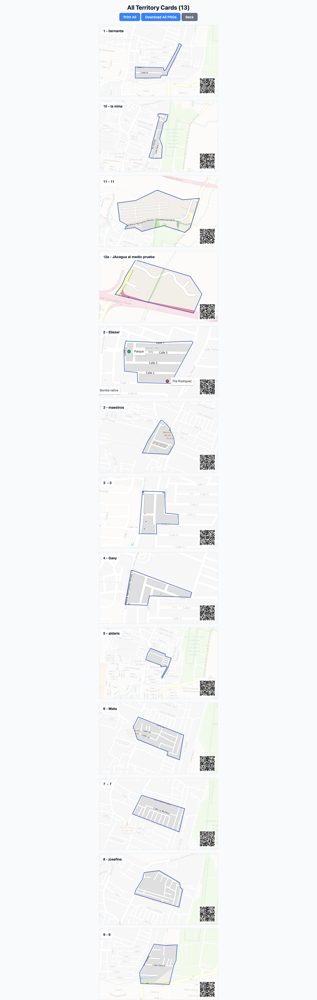

Introducción
Tarjetas de Territorio es una aplicación web para administrar, asignar e imprimir tarjetas de territorios de predicación. Funciona en dos modos: sin conexión (datos en tu navegador) o en línea (datos en la nube, compartidos con toda la congregación).
- Dibujar límites de territorio sobre un mapa interactivo
- Agregar puntos de referencia y manzanas
- Asignar territorios a publicadores con seguimiento de fechas
- Generar tarjetas imprimibles con mapa, QR y referencias
- Compartir territorios con links públicos
- Importar y exportar datos (JSON, KML/KMZ de Google Earth)
- Interfaz bilingüe: español e inglés
- Tema claro y oscuro
Modos de uso
Al abrir la app por primera vez verás la pantalla de bienvenida con dos opciones:
Modo sin conexión (Offline)
Los datos se guardan en el almacenamiento local de tu navegador. No necesitas cuenta ni internet (después de cargar la app). Ideal para uso personal o para probar la app antes de crear una cuenta.
Limitaciones: no puedes compartir datos con otros usuarios, no hay links públicos, y si borras los datos del navegador se pierde todo (pero puedes exportar a JSON como respaldo).
Modo en línea (Online)
Los datos se almacenan en Firebase (nube de Google). Todos los miembros de la congregación acceden a los mismos datos en tiempo real. Requiere una cuenta de Google.
Ventajas: sincronización en tiempo real, roles y permisos, links públicos para compartir territorios, invitación de miembros.

Roles y permisos
En modo online, cada usuario tiene un rol que determina qué puede hacer. En modo offline, no hay restricciones — tienes acceso a todo.
Control total: crea, edita y elimina territorios; administra usuarios; asigna territorios; ve todo el historial; imprime tarjetas; gestiona la congregación.
Puede ver todos los territorios y su historial completo. Puede marcar como completadas las asignaciones propias e imprimir tarjetas. No puede crear, editar ni eliminar territorios, ni administrar usuarios.
Solo ve los territorios que le fueron asignados activamente. Puede marcar su propia asignación como completada o devuelta. No ve territorios de otros ni el historial completo.
Tabla de permisos detallada
| Acción | Admin | Conductor | Publicador | Offline |
|---|---|---|---|---|
| Ver todos los territorios | ✓ | ✓ | ✗ | ✓ |
| Ver territorio asignado | ✓ | ✓ | ✓ | ✓ |
| Crear territorio | ✓ | ✗ | ✗ | ✓ |
| Editar territorio | ✓ | ✗ | ✗ | ✓ |
| Eliminar territorio | ✓ | ✗ | ✗ | ✓ |
| Agregar puntos de referencia | ✓ | ✗ | ✗ | ✓ |
| Agregar manzanas | ✓ | ✗ | ✗ | ✓ |
| Asignar territorio | ✓ | ✗ | ✗ | ✓ |
| Completar asignación propia | ✓ | ✓ | ✓ | ✓ |
| Ver historial completo | ✓ | ✓ | ✗ | ✓ |
| Editar entrada de historial | ✓ | Propia | Propia | ✓ |
| Eliminar entrada de historial | ✓ | ✗ | ✗ | ✓ |
| Ver tarjeta individual | ✓ | ✓ | ✓ | ✓ |
| Imprimir todas las tarjetas | ✓ | ✓ | ✗ | ✓ |
| Ajustar zoom de tarjeta | ✓ | ✓ | ✗ | ✓ |
| Compartir link público | ✓ | ✓ | ✓ | ✗ |
| Panel de administración | ✓ | ✗ | ✗ | N/A |
| Invitar usuarios | ✓ | ✗ | ✗ | N/A |
| Cambiar roles | ✓ | ✗ | ✗ | N/A |
| Guardar / cargar JSON | ✓ | ✓ | ✓ | ✓ |
| Importar KML/KMZ | ✓ | ✗ | ✗ | ✓ |
Configurar modo offline
Abre la aplicación en tu navegador.
En la pantalla de bienvenida, haz clic en "Usar sin conexión".
La app cargará directamente a la vista de territorios. Todos los datos se guardan en tu navegador.
En modo offline, si limpias los datos del navegador (caché, cookies, localStorage), perderás tus territorios. Usa Guardar JSON periódicamente como respaldo.
Configurar modo online
En la pantalla de bienvenida, haz clic en "Crear cuenta".
Inicia sesión con tu cuenta de Google.
Escribe el nombre de tu congregación y haz clic en registrar. Serás el administrador automáticamente.
La app te llevará a la pantalla principal. Ya puedes crear territorios e invitar miembros.
Conocer la interfaz
La interfaz principal tiene estos elementos:
Barra de navegación (arriba)
- Tarjetas de Territorio — logo/nombre de la app, haz clic para volver al inicio
- Imprimir — acceso directo a la vista de impresión masiva
- Menú (⋮) — opciones adicionales: Cargar JSON, Guardar JSON, Importar KML, Reiniciar
- Tema — alterna entre modo claro y oscuro
- Idioma — cambia entre Español e Inglés
Vista de territorios (página principal)
- Vista de tarjetas — muestra cada territorio como una tarjeta con mapa miniatura
- Vista de tabla — lista compacta con columnas: número, nombre, grupo, puntos
- Botón "Nuevo Territorio" — solo visible para administradores
- Puedes alternar entre vista de tarjetas y tabla con los íconos en la esquina superior derecha

Modo claro, vista de tarjetasCrear territorio
Admin Offline
Desde la pantalla principal, haz clic en "Nuevo Territorio" (o en el + si estás en la pantalla de bienvenida).
Rellena los campos del formulario:
— Número: identificador del territorio (ej: "1", "12A")
— Nombre: nombre descriptivo (ej: "Centro", "La Joya")
— Grupo: nombre del grupo de servicio (opcional)
— Enlace QR: URL opcional que se mostrará como código QR en la tarjeta
— Notas: instrucciones de acceso o referencias generales
Dibuja el límite del territorio en el mapa:
— Haz clic en el ícono del pentágono (polígono) en la barra de herramientas del mapa
— Haz clic en puntos del mapa para definir los vértices del territorio
— Haz clic en el primer punto nuevamente para cerrar la forma
— Puedes arrastrar los vértices para ajustar
Haz clic en "Guardar Territorio".

Si navegas fuera del formulario sin guardar, la app guardará un borrador automáticamente. La próxima vez que entres al formulario, te preguntará si deseas restaurar el borrador.
Ver detalle de un territorio
Admin Conductor Publicador Offline
Desde la pantalla principal, haz clic en el nombre o tarjeta del territorio que deseas ver.
Verás:
— Mapa con el polígono del territorio
— Puntos de referencia marcados en el mapa
— Manzanas numeradas
— Notas del territorio
— Estado de asignación (a quién está asignado y desde cuándo)
— Historial de trabajo con todas las asignaciones pasadas
Desde esta vista también puedes acceder a las acciones principales: Tarjeta, Compartir, Editar y Volver.

Editar territorio
Admin Offline
Desde la vista de detalle del territorio, haz clic en "Editar".
Se abrirá el mismo formulario de creación pero con los datos actuales cargados. Modifica lo que necesites.
Para redibujar el polígono, usa las herramientas del mapa: puedes arrastrar los vértices existentes o dibujar un polígono nuevo (el anterior se reemplaza).
Haz clic en "Guardar Territorio" para confirmar los cambios.
Si intentas salir del formulario con cambios sin guardar, la app te pedirá confirmación.
Puntos de referencia
Admin Offline
Los puntos de referencia son marcadores que se agregan al mapa para señalar lugares importantes dentro del territorio (comercios, edificios, esquinas clave, etc.).
Agregar un punto de referencia
En la vista de detalle del territorio, haz clic en "Agregar Referencia".
Haz clic en el punto del mapa donde quieres colocar la referencia.
Escribe el nombre y opcionalmente una descripción.
Elige el alcance:
— Solo este territorio: el punto se muestra solo en este territorio
— Todos los territorios (Global): el punto se muestra en todos los mapas como referencia general
Haz clic en "Guardar".
Para editar o eliminar un punto existente, usa los botones que aparecen en la lista de puntos debajo del mapa.
Los puntos de referencia se asignan colores automáticamente del siguiente orden: rojo, azul, verde, morado, naranja. Esto ayuda a distinguirlos visualmente en el mapa y en la tarjeta impresa.
Manzanas
Admin Offline
Las manzanas representan bloques de calles dentro del territorio. Se muestran como etiquetas numeradas en el mapa.
Agregar una manzana
En la vista de detalle, haz clic en "Dibujar Manzana".
Haz clic en el punto del mapa donde quieres ubicar la etiqueta de la manzana.
Escribe el número o nombre de la manzana (ej: "1", "2", "A").
Eliminar territorio
Admin Offline
Desde la vista de detalle del territorio o desde la vista de edición, busca el botón "Eliminar este territorio" al final de la página.
Confirma la eliminación en el diálogo que aparece. Esta acción no se puede deshacer.
Eliminar un territorio borra también todos sus puntos de referencia, manzanas e historial asociado. Considera exportar un JSON de respaldo antes de eliminar.
Asignar territorio
Admin Offline
Entra al detalle del territorio que deseas asignar.
Haz clic en "Asignar Territorio".
En modo offline: escribe el nombre de la persona manualmente.
En modo online: selecciona al miembro de la congregación de la lista desplegable.
Haz clic en "Asignar". El territorio mostrará el nombre de la persona asignada y la fecha de inicio.
Completar o devolver asignación
Admin Conductor Publicador Offline
Cuando un territorio ya fue trabajado, se puede marcar la asignación como completada o devuelta:
Ve al detalle del territorio.
En la sección de asignación activa, haz clic en:
— "Completado" si el territorio fue trabajado completamente
— "Devolver" si se devuelve sin completar
La asignación pasa al historial y el territorio queda disponible para una nueva asignación.
Los conductores y publicadores solo pueden completar sus propias asignaciones. El administrador puede completar cualquier asignación.
Historial de trabajo
Admin Conductor Offline
El historial muestra todas las asignaciones pasadas de un territorio: quién lo trabajó, cuándo empezó, cuándo terminó, y notas.
Filtrar historial
Puedes filtrar por estado usando los botones de filtro: Todos, Activos, Completados, Devueltos.
Agregar registro manual
El administrador puede agregar registros de trabajo manualmente usando el botón "Agregar Registro", indicando persona, fecha de inicio, fecha de fin, tipo y notas.
Editar o eliminar
Cada entrada tiene botones de Editar y Eliminar (según los permisos del usuario). Los conductores y publicadores solo pueden editar sus propias entradas.
Ver tarjeta del territorio
Admin Conductor Publicador Offline
Desde el detalle del territorio, haz clic en "Tarjeta".
Verás una vista optimizada para impresión con:
— Mapa estático con el polígono y puntos de referencia
— Nombre y número del territorio
— Código QR (si configuraste un enlace QR)
— Lista de referencias con colores

Descargar tarjeta como PNG
Desde la vista de tarjeta, haz clic en "Descargar PNG".
Se descargará una imagen PNG de alta resolución (2x) con el nombre del archivo basado en el número y nombre del territorio.
Las imágenes se generan a 2x la resolución de pantalla para que se vean nítidas al imprimir.
Imprimir todas las tarjetas
Admin Conductor Offline
En la barra de navegación, haz clic en "Imprimir".
Verás todas las tarjetas generadas. Puedes:
— "Imprimir Todo": abre el diálogo de impresión del navegador con todas las tarjetas
— "Descargar PNGs": descarga cada tarjeta como imagen individual

Ajustar zoom y centro de la tarjeta
Admin Conductor Offline
Cada territorio puede tener un zoom y centro personalizado para su tarjeta:
Desde la vista de tarjeta, haz clic en "Editar zoom y centro".
Usa el mapa para hacer zoom y mover la vista hasta que se vea como deseas.
Haz clic en "Guardar vista" para que ese zoom y centro se usen siempre para este territorio.
Para volver al zoom automático, haz clic en "Restablecer vista".
Compartir con links públicos
Admin Conductor Publicador (solo modo online)
Desde la vista de detalle de un territorio, haz clic en el botón "Compartir".
La app generará un link público único y lo copiará a tu portapapeles.
Cualquier persona con ese link puede ver el territorio (mapa, referencias, link a Google Maps) sin necesidad de cuenta.
La vista pública es de solo lectura y muestra el mapa con un botón para "Abrir en Google Maps". Ideal para enviar por WhatsApp o mensajería a publicadores que no usen la app.
Panel de administración
Admin (solo modo online)
El panel de administración muestra la información de la congregación y permite gestionar los miembros.
Acceder al panel
Haz clic en el botón de menú del usuario o navega directamente a la sección de Admin.
En el panel verás:
- Información de la congregación: nombre e ID
- Lista de miembros: nombre, correo, rol actual
- Formulario de invitación: para agregar nuevos miembros
Invitar usuarios
Admin
En el panel de administración, busca la sección "Invitar Usuario".
Ingresa:
— Correo electrónico: el correo de Google del usuario
— Nombre: nombre para mostrar
— Rol: Publicador, Conductor o Administrador
Haz clic en "Enviar Invitación".
Dile al usuario que inicie sesión con ese correo de Google en la app. Se unirá automáticamente a tu congregación con el rol asignado.
El usuario debe usar el mismo correo de Google que ingresaste. Si usa otro correo, no se vinculará automáticamente a la congregación.
Cambiar roles de usuarios
Admin
En el panel de administración, busca al miembro en la lista.
Haz clic en "Cambiar rol" junto al nombre del miembro.
Selecciona el nuevo rol: Administrador, Conductor o Publicador.
No puedes cambiar tu propio rol. Necesitas que otro administrador lo haga.
Guardar datos como JSON
Todos los roles
En la barra de navegación, abre el menú (⋮).
Haz clic en "Guardar JSON".
Se descargará un archivo .json con todos los territorios, puntos de referencia, manzanas e historial.
Guarda un JSON periódicamente como respaldo, especialmente si usas el modo offline.
Cargar datos desde JSON
Todos los roles
En la barra de navegación, abre el menú (⋮).
Haz clic en "Cargar JSON" y selecciona el archivo.
Confirma que deseas reemplazar los datos actuales. Esta acción reemplaza todos los datos existentes.
Cargar un JSON reemplaza todos los datos actuales. Exporta un respaldo antes si necesitas conservar la información existente.
Importar desde KML/KMZ (Google Earth)
Admin Offline
En la barra de navegación, abre el menú (⋮).
Haz clic en "Importar KML" y selecciona un archivo .kml o .kmz.
La app extraerá los polígonos del archivo y creará territorios con los nombres encontrados.
Puedes dibujar los territorios en Google Earth, exportar como KML/KMZ, e importarlos aquí. Los polígonos se convierten automáticamente en límites de territorio.
Migrar datos locales a la nube
Si empezaste en modo offline y ahora deseas usar el modo online:
Ve a Configuración (ícono de engranaje o menú).
Haz clic en "Registrarse y migrar datos".
Inicia sesión con Google y registra tu congregación.
Tus datos locales (territorios, puntos, historial) se subirán a la nube automáticamente.
Tema claro / oscuro
Haz clic en el ícono de luna/sol en la barra de navegación para alternar entre el tema claro y oscuro. La preferencia se guarda en tu navegador.
Idioma
La app soporta español e inglés. Para cambiar el idioma:
En la barra de navegación, busca el selector de idioma (ES / EN).
Haz clic para alternar entre idiomas. La interfaz se actualiza inmediatamente.
Preguntas frecuentes
¿Puedo usar la app sin internet?
Sí, en modo offline la app funciona completamente sin internet (después de cargarla la primera vez). Todos los datos se guardan en tu navegador.
¿Qué pasa si borro los datos del navegador en modo offline?
Se pierden los territorios. Usa "Guardar JSON" periódicamente como respaldo para evitar pérdida de datos.
¿Puedo tener varios administradores?
Sí, el administrador original puede invitar a otros usuarios con el rol de Administrador desde el panel de admin.
¿Cómo agrego territorios que ya tengo en Google Earth?
Exporta los territorios desde Google Earth como archivo KML o KMZ, luego usa la opción "Importar KML" en el menú de la app.
¿Qué navegadores son compatibles?
Chrome, Firefox, Safari y Edge en sus versiones recientes. La app funciona tanto en computadora como en dispositivos móviles.
¿Puedo cambiar de modo offline a online?
Sí, ve a Configuración y usa "Registrarse y migrar datos". Tus datos locales se subirán a la nube.
¿El link público expone datos sensibles?
No, el link público solo muestra el mapa del territorio con sus referencias. No muestra historial, asignaciones ni datos de la congregación.
¿Puedo imprimir las tarjetas directamente?
Sí, tanto desde la vista individual (botón "Imprimir") como desde la vista masiva ("Imprimir Todo"). También puedes descargar las tarjetas como imágenes PNG.